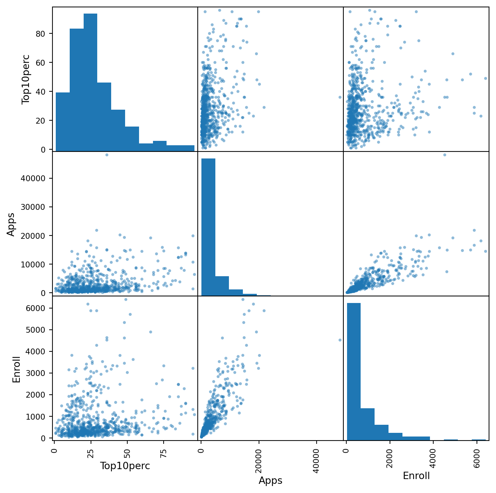
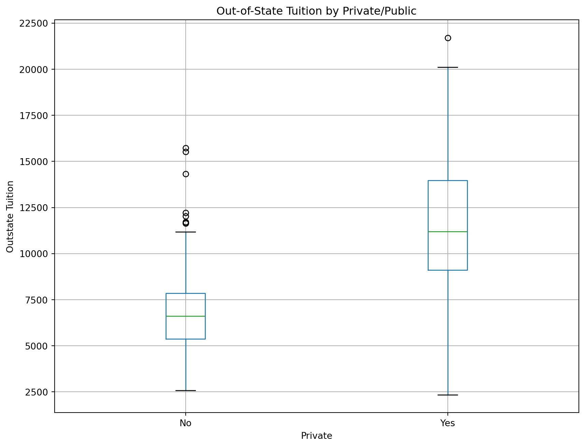
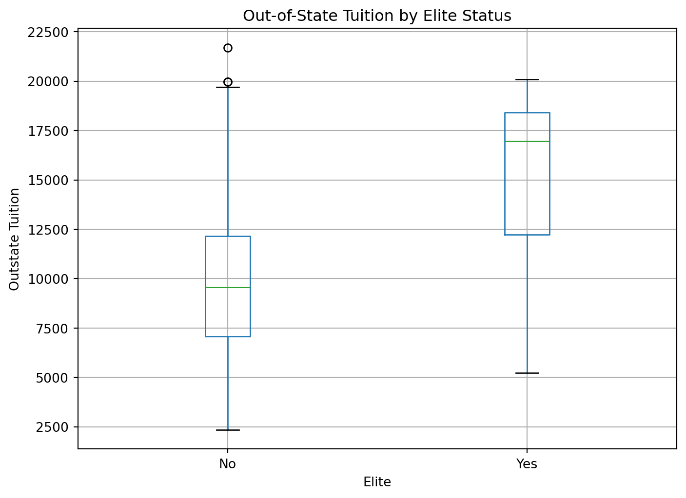
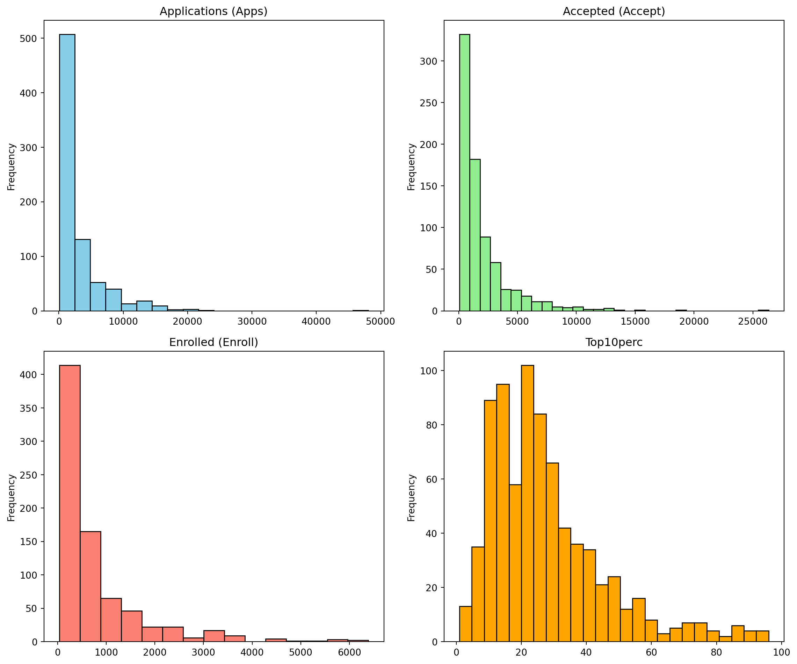
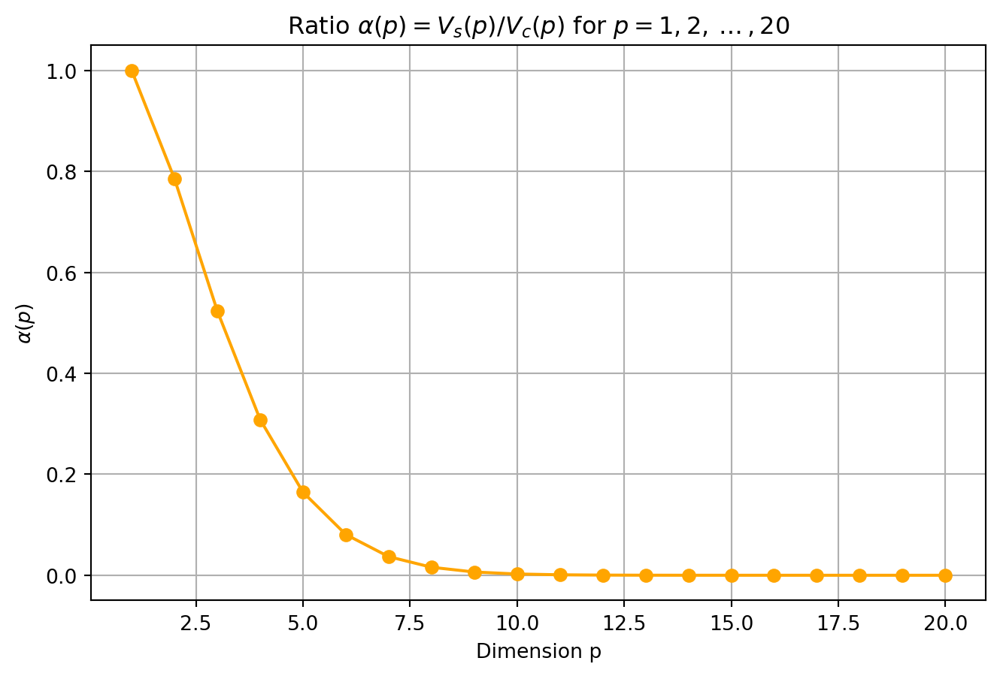

import math
import numpy as np
import pandas as pd
import matplotlib.pyplot as plt
from pandas.plotting import scatter_matrixHW1
Setting
Exercise 1
(a) CEO Salary
- Type: Regression
- Reason: We are mainly interested in understanding which predictors (profit, employees, industry) affect salary, not just predicting new values.
- Goal: Inference (understand which factors affect salary)
- n = 500
- p = 3
(b) Product Success/Failure
- Type: Classification
- Reason: The purpose is to predict whether a new product will succeed, based on previous products’ data.
- Goal: Prediction (predict whether new product will succeed)
- n = 20
- p = 13
(c) Exchange Rate Prediction
- Type: Regression
- Reason: The response variable is % change in USD/Euro, which is continuous.
- Goal: Prediction (predict % change in USD/Euro)
- n = 52
- p = 3
Exercise 2
(a)
data = {
"Obs": [1, 2, 3, 4, 5, 6],
"X1": [0, 2, 0, 0, -1, 1],
"X2": [3, 0, 1, 1, 0, 1],
"X3": [0, 0, 3, 2, 1, 1],
"Y": ["Red", "Red", "Red", "Green", "Green", "Red"]
}
df = pd.DataFrame(data)
test_point = np.array([0, 0, 0])
df["Distance"] = np.sqrt((df["X1"] - test_point[0])**2 +
(df["X2"] - test_point[1])**2 +
(df["X3"] - test_point[2])**2)
df_sorted = df.sort_values("Distance").reset_index(drop=True)
df_sorted| Obs | X1 | X2 | X3 | Y | Distance | |
|---|---|---|---|---|---|---|
| 0 | 5 | -1 | 0 | 1 | Green | 1.414214 |
| 1 | 6 | 1 | 1 | 1 | Red | 1.732051 |
| 2 | 2 | 2 | 0 | 0 | Red | 2.000000 |
| 3 | 4 | 0 | 1 | 2 | Green | 2.236068 |
| 4 | 1 | 0 | 3 | 0 | Red | 3.000000 |
| 5 | 3 | 0 | 1 | 3 | Red | 3.162278 |
(b)
K=1, KNN assigns the test point the same class as the single closest observation. Since Obs 5 (Green) is the nearest, the predicted class is Green.
(c)
K=3, the test point is classified according to the majority among its three closest neighbors. Since 2 out of 3 are Red, the prediction is Red.
(d)
If the Bayes decision boundary is highly nonlinear, the best K would be small. Because small K gives KNN higher flexibility, allowing it to trace the nonlinear decision boundary more accurately.
Exercise 3
(a)
college = pd.read_csv("College.csv")
print(college.head())
print(college.info()) Unnamed: 0 Private Apps Accept Enroll Top10perc \
0 Abilene Christian University Yes 1660 1232 721 23
1 Adelphi University Yes 2186 1924 512 16
2 Adrian College Yes 1428 1097 336 22
3 Agnes Scott College Yes 417 349 137 60
4 Alaska Pacific University Yes 193 146 55 16
Top25perc F.Undergrad P.Undergrad Outstate Room.Board Books Personal \
0 52 2885 537 7440 3300 450 2200
1 29 2683 1227 12280 6450 750 1500
2 50 1036 99 11250 3750 400 1165
3 89 510 63 12960 5450 450 875
4 44 249 869 7560 4120 800 1500
PhD Terminal S.F.Ratio perc.alumni Expend Grad.Rate
0 70 78 18.1 12 7041 60
1 29 30 12.2 16 10527 56
2 53 66 12.9 30 8735 54
3 92 97 7.7 37 19016 59
4 76 72 11.9 2 10922 15
<class 'pandas.core.frame.DataFrame'>
RangeIndex: 777 entries, 0 to 776
Data columns (total 19 columns):
# Column Non-Null Count Dtype
--- ------ -------------- -----
0 Unnamed: 0 777 non-null object
1 Private 777 non-null object
2 Apps 777 non-null int64
3 Accept 777 non-null int64
4 Enroll 777 non-null int64
5 Top10perc 777 non-null int64
6 Top25perc 777 non-null int64
7 F.Undergrad 777 non-null int64
8 P.Undergrad 777 non-null int64
9 Outstate 777 non-null int64
10 Room.Board 777 non-null int64
11 Books 777 non-null int64
12 Personal 777 non-null int64
13 PhD 777 non-null int64
14 Terminal 777 non-null int64
15 S.F.Ratio 777 non-null float64
16 perc.alumni 777 non-null int64
17 Expend 777 non-null int64
18 Grad.Rate 777 non-null int64
dtypes: float64(1), int64(16), object(2)
memory usage: 115.5+ KB
None(b)
college2 = pd.read_csv("College.csv", index_col=0)
college = pd.read_csv("College.csv")
college3 = college.rename({"Unnamed: 0": "College"}, axis=1)
college3 = college3.set_index("College")
college = college3
college| Private | Apps | Accept | Enroll | Top10perc | Top25perc | F.Undergrad | P.Undergrad | Outstate | Room.Board | Books | Personal | PhD | Terminal | S.F.Ratio | perc.alumni | Expend | Grad.Rate | |
|---|---|---|---|---|---|---|---|---|---|---|---|---|---|---|---|---|---|---|
| College | ||||||||||||||||||
| Abilene Christian University | Yes | 1660 | 1232 | 721 | 23 | 52 | 2885 | 537 | 7440 | 3300 | 450 | 2200 | 70 | 78 | 18.1 | 12 | 7041 | 60 |
| Adelphi University | Yes | 2186 | 1924 | 512 | 16 | 29 | 2683 | 1227 | 12280 | 6450 | 750 | 1500 | 29 | 30 | 12.2 | 16 | 10527 | 56 |
| Adrian College | Yes | 1428 | 1097 | 336 | 22 | 50 | 1036 | 99 | 11250 | 3750 | 400 | 1165 | 53 | 66 | 12.9 | 30 | 8735 | 54 |
| Agnes Scott College | Yes | 417 | 349 | 137 | 60 | 89 | 510 | 63 | 12960 | 5450 | 450 | 875 | 92 | 97 | 7.7 | 37 | 19016 | 59 |
| Alaska Pacific University | Yes | 193 | 146 | 55 | 16 | 44 | 249 | 869 | 7560 | 4120 | 800 | 1500 | 76 | 72 | 11.9 | 2 | 10922 | 15 |
| ... | ... | ... | ... | ... | ... | ... | ... | ... | ... | ... | ... | ... | ... | ... | ... | ... | ... | ... |
| Worcester State College | No | 2197 | 1515 | 543 | 4 | 26 | 3089 | 2029 | 6797 | 3900 | 500 | 1200 | 60 | 60 | 21.0 | 14 | 4469 | 40 |
| Xavier University | Yes | 1959 | 1805 | 695 | 24 | 47 | 2849 | 1107 | 11520 | 4960 | 600 | 1250 | 73 | 75 | 13.3 | 31 | 9189 | 83 |
| Xavier University of Louisiana | Yes | 2097 | 1915 | 695 | 34 | 61 | 2793 | 166 | 6900 | 4200 | 617 | 781 | 67 | 75 | 14.4 | 20 | 8323 | 49 |
| Yale University | Yes | 10705 | 2453 | 1317 | 95 | 99 | 5217 | 83 | 19840 | 6510 | 630 | 2115 | 96 | 96 | 5.8 | 49 | 40386 | 99 |
| York College of Pennsylvania | Yes | 2989 | 1855 | 691 | 28 | 63 | 2988 | 1726 | 4990 | 3560 | 500 | 1250 | 75 | 75 | 18.1 | 28 | 4509 | 99 |
777 rows × 18 columns
(c)
summary = college.describe()
summary| Apps | Accept | Enroll | Top10perc | Top25perc | F.Undergrad | P.Undergrad | Outstate | Room.Board | Books | Personal | PhD | Terminal | S.F.Ratio | perc.alumni | Expend | Grad.Rate | |
|---|---|---|---|---|---|---|---|---|---|---|---|---|---|---|---|---|---|
| count | 777.000000 | 777.000000 | 777.000000 | 777.000000 | 777.000000 | 777.000000 | 777.000000 | 777.000000 | 777.000000 | 777.000000 | 777.000000 | 777.000000 | 777.000000 | 777.000000 | 777.000000 | 777.000000 | 777.00000 |
| mean | 3001.638353 | 2018.804376 | 779.972973 | 27.558559 | 55.796654 | 3699.907336 | 855.298584 | 10440.669241 | 4357.526384 | 549.380952 | 1340.642214 | 72.660232 | 79.702703 | 14.089704 | 22.743887 | 9660.171171 | 65.46332 |
| std | 3870.201484 | 2451.113971 | 929.176190 | 17.640364 | 19.804778 | 4850.420531 | 1522.431887 | 4023.016484 | 1096.696416 | 165.105360 | 677.071454 | 16.328155 | 14.722359 | 3.958349 | 12.391801 | 5221.768440 | 17.17771 |
| min | 81.000000 | 72.000000 | 35.000000 | 1.000000 | 9.000000 | 139.000000 | 1.000000 | 2340.000000 | 1780.000000 | 96.000000 | 250.000000 | 8.000000 | 24.000000 | 2.500000 | 0.000000 | 3186.000000 | 10.00000 |
| 25% | 776.000000 | 604.000000 | 242.000000 | 15.000000 | 41.000000 | 992.000000 | 95.000000 | 7320.000000 | 3597.000000 | 470.000000 | 850.000000 | 62.000000 | 71.000000 | 11.500000 | 13.000000 | 6751.000000 | 53.00000 |
| 50% | 1558.000000 | 1110.000000 | 434.000000 | 23.000000 | 54.000000 | 1707.000000 | 353.000000 | 9990.000000 | 4200.000000 | 500.000000 | 1200.000000 | 75.000000 | 82.000000 | 13.600000 | 21.000000 | 8377.000000 | 65.00000 |
| 75% | 3624.000000 | 2424.000000 | 902.000000 | 35.000000 | 69.000000 | 4005.000000 | 967.000000 | 12925.000000 | 5050.000000 | 600.000000 | 1700.000000 | 85.000000 | 92.000000 | 16.500000 | 31.000000 | 10830.000000 | 78.00000 |
| max | 48094.000000 | 26330.000000 | 6392.000000 | 96.000000 | 100.000000 | 31643.000000 | 21836.000000 | 21700.000000 | 8124.000000 | 2340.000000 | 6800.000000 | 103.000000 | 100.000000 | 39.800000 | 64.000000 | 56233.000000 | 118.00000 |
(d)
cols = ["Top10perc", "Apps", "Enroll"]
scatter_matrix(college[cols], figsize=(8, 8), diagonal='hist')
plt.show()
(e)
college.boxplot(column="Outstate", by="Private", figsize=(10,8))
plt.title("Out-of-State Tuition by Private/Public")
plt.suptitle("")
plt.xlabel("Private")
plt.ylabel("Outstate Tuition")
plt.show()
(f)
college['Elite'] = pd.cut(
college['Top10perc'],
bins=[0, 50, 100],
labels=['No', 'Yes']
)
print(college['Elite'].value_counts())
college.boxplot(column='Outstate', by='Elite', figsize=(8,6))
plt.title("Out-of-State Tuition by Elite Status")
plt.suptitle("")
plt.xlabel("Elite")
plt.ylabel("Outstate Tuition")
plt.show()Elite
No 699
Yes 78
Name: count, dtype: int64
(g)
cols = ["Apps", "Accept", "Enroll", "Top10perc"]
fig, axes = plt.subplots(2, 2, figsize=(12, 10))
college["Apps"].plot.hist(bins=20, ax=axes[0,0], color="skyblue", edgecolor="black")
axes[0,0].set_title("Applications (Apps)")
college["Accept"].plot.hist(bins=30, ax=axes[0,1], color="lightgreen", edgecolor="black")
axes[0,1].set_title("Accepted (Accept)")
college["Enroll"].plot.hist(bins=15, ax=axes[1,0], color="salmon", edgecolor="black")
axes[1,0].set_title("Enrolled (Enroll)")
college["Top10perc"].plot.hist(bins=25, ax=axes[1,1], color="orange", edgecolor="black")
axes[1,1].set_title("Top10perc")
plt.tight_layout()
plt.show()
(h)
Summary:
Private schools generally have much higher Outstate tuition compared to public schools, with a clear separation in the boxplots. Only a small fraction of schools (78 of 777) are classified as Elite (Top10perc > 50), and these also tend to have higher tuition than non-Elite schools. The distribution of Top10perc shows that most colleges have 10–40% of freshmen from the top 10% of their high school class, but a small set of highly selective institutions reach above 80%. The number of applications, acceptances, and enrollments are highly right-skewed: while most schools have under 10,000 applications, a few receive over 40,000. Graduation rates are generally between 40–80%, though some data values exceed 100%. Overall, the dataset is heterogeneous, covering small private colleges, large state schools, and elite universities. Tuition and selectivity (Top10perc) appear positively related, and both the Private and Elite variables highlight systematic differences in costs and student profiles.
Exercise 4
1
The unit sphere in \(\mathbb{R}^p\) fits inside the hypercube \([-1,\,1]^p\), whose side length is \(2\).
In \(p\) dimensions, the volume of a hypercube is \((\text{side length})^p\). Therefore,
\(V_c(p) = 2^p\)
2
The volume of the \(p\)-dimensional unit ball is
\(V_s(p) = \dfrac{\pi^{p/2}}{\Gamma\!\left(\tfrac{p}{2}+1\right)}\)
- If \(p=2m\) (even): \(V_s(2m) = \dfrac{\pi^m}{m!}\)
- If \(p=2m+1\) (odd): \(V_s(2m+1) = \dfrac{2^{m+1}\pi^m}{(2m+1)!!}\)
Examples: \(V_s(2)=\pi\), \(V_s(3)=\tfrac{4}{3}\pi\)
3
The ratio is defined as
\(\alpha(p) = \dfrac{V_s(p)}{V_c(p)}\)
where \(V_s(p) = \dfrac{\pi^{p/2}}{\Gamma\!\left(\tfrac{p}{2}+1\right)}\) and \(V_c(p) = 2^p\).
Thus,
\(\alpha(p) = \dfrac{\pi^{p/2}}{2^p \, \Gamma\!\left(\tfrac{p}{2}+1\right)}\)
4
def V_s(p):
return math.pi**(p/2) / math.gamma(p/2 + 1)
def V_c(p):
return 2**p
p_vals = np.arange(1, 21)
alpha_vals = [V_s(p) / V_c(p) for p in p_vals]
df = pd.DataFrame({"p": p_vals, "alpha(p)": alpha_vals})
print(df)
plt.figure(figsize=(8, 5))
plt.plot(p_vals, alpha_vals, marker="o", color="orange")
plt.title(r"Ratio $\alpha(p) = V_s(p)/V_c(p)$ for $p=1,2,\dots,20$")
plt.xlabel("Dimension p")
plt.ylabel(r"$\alpha(p)$")
plt.grid(True)
plt.show() p alpha(p)
0 1 1.000000e+00
1 2 7.853982e-01
2 3 5.235988e-01
3 4 3.084251e-01
4 5 1.644934e-01
5 6 8.074551e-02
6 7 3.691223e-02
7 8 1.585434e-02
8 9 6.442400e-03
9 10 2.490395e-03
10 11 9.199726e-04
11 12 3.259919e-04
12 13 1.111607e-04
13 14 3.657620e-05
14 15 1.164073e-05
15 16 3.590860e-06
16 17 1.075600e-06
17 18 3.133617e-07
18 19 8.892365e-08
19 20 2.461137e-08
5
The statement “In higher dimensions most of the volume is in the corners” is accurate. As dimension increases, the inscribed sphere (which represents the “center” region) occupies a vanishing fraction of the cube’s volume. Most of the cube’s volume lies near its corners and edges, far from the center. This is a direct manifestation of the curse of dimensionality.